Ein Sommer am Gletscher: Was Bilder, Messwerte und Vergleiche zeigen
Beispielartikel, der jeden neuen Gestaltungs-Baustein einmal verwendet
Ein Gletscher verändert sich langsam und dann plötzlich. Dieser Artikel zeigt, wie die neuen Bausteine solche Geschichten erzählen.
Drei neue Galerie-Formen
Wofür: Mosaik zeigt eine Serie auf einen Blick; Karussell erzählt eine Abfolge Bild für Bild; Bildstreifen lädt zum Stöbern ein und spart Höhe. Ein Klick öffnet die Bildansicht, darin blättert man mit Pfeilen, Tasten oder Wischen durch die ganze Galerie.
Mosaik
<div class="gallery" data-variant="mosaic" data-media="m…,m…,m…"></div>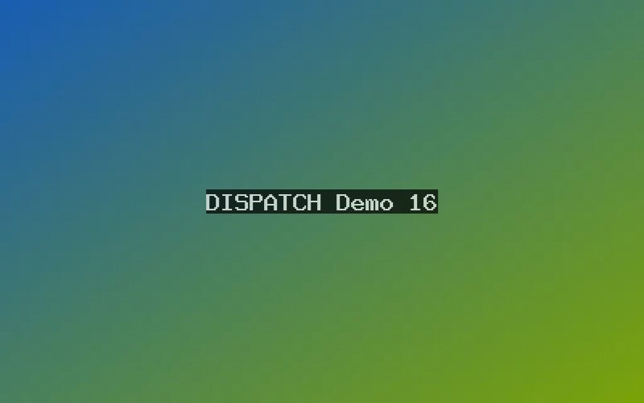
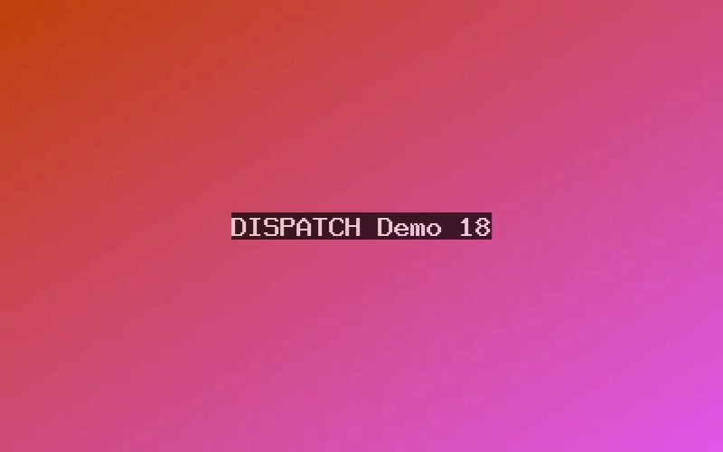
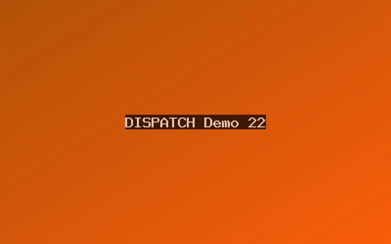
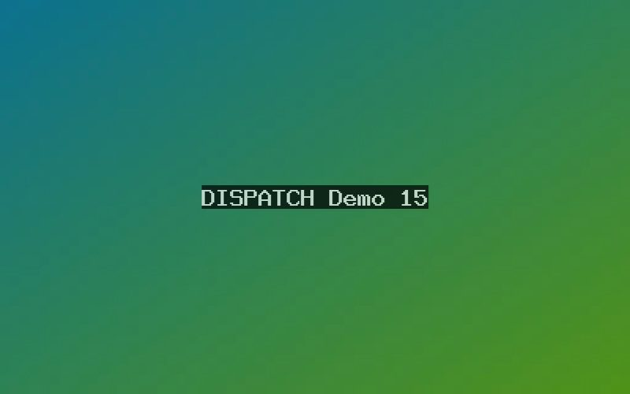
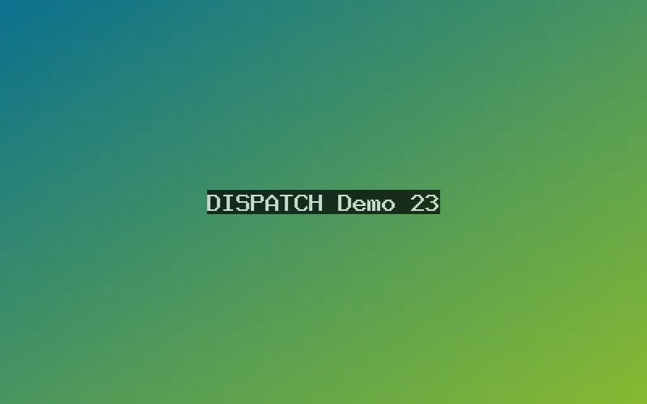
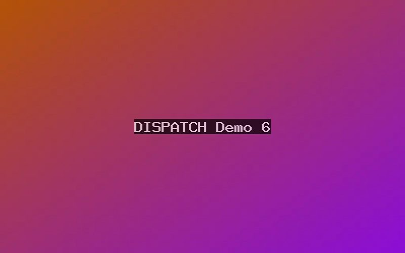
Karussell
<div class="gallery" data-variant="carousel" data-media="m…,m…,m…"></div>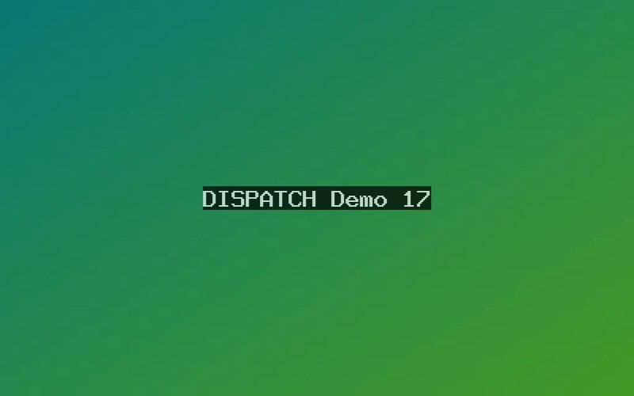
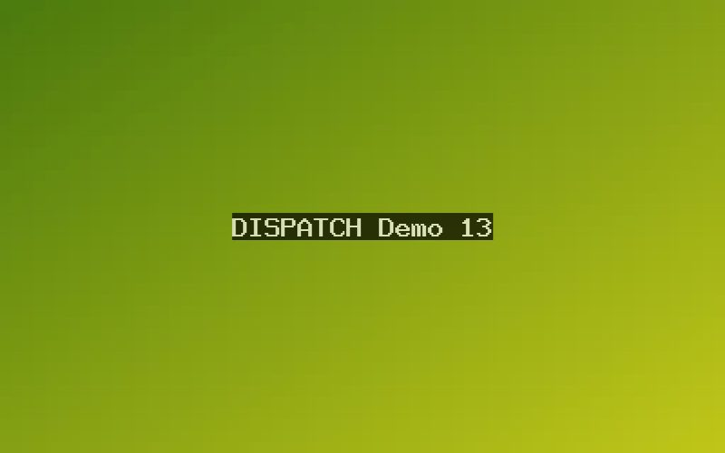
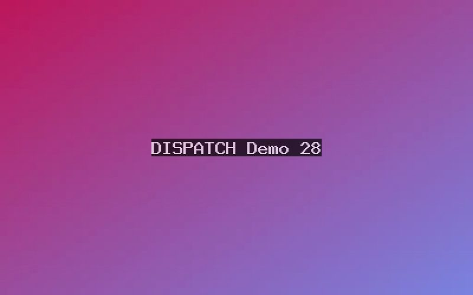
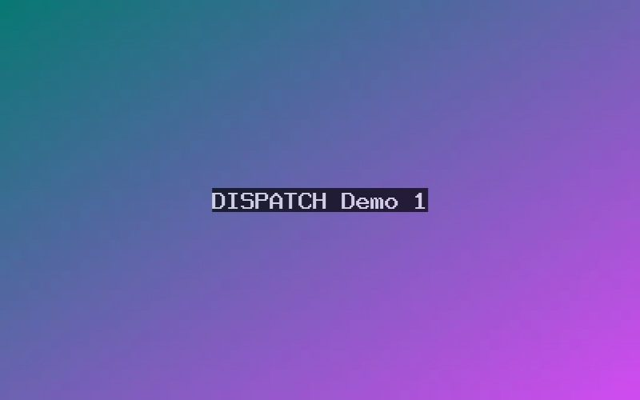
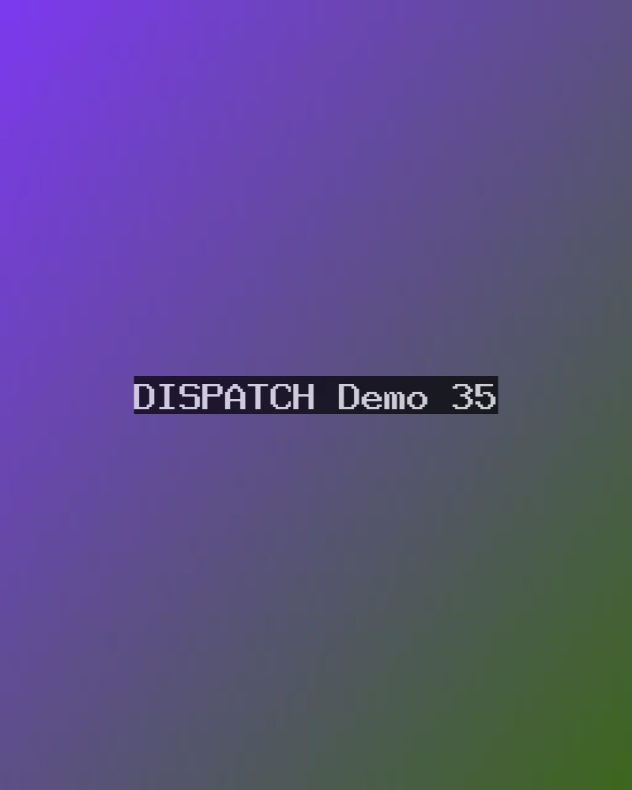
Bildstreifen
<div class="gallery" data-variant="strips" data-media="m…,m…,m…"></div>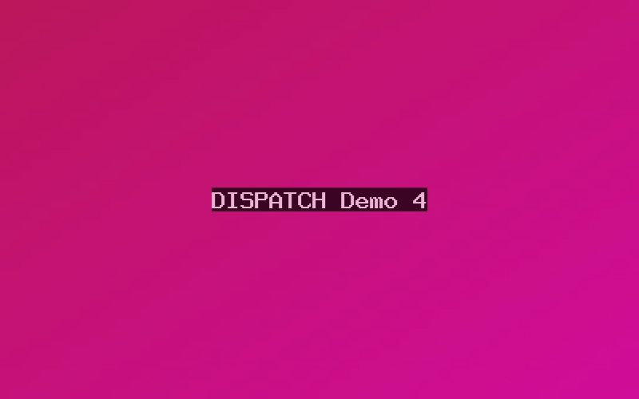
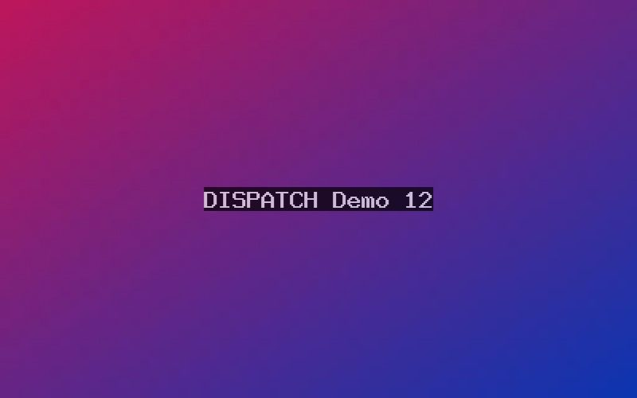
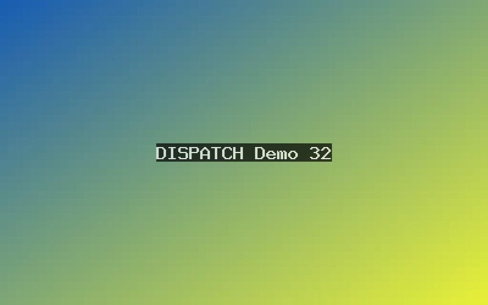
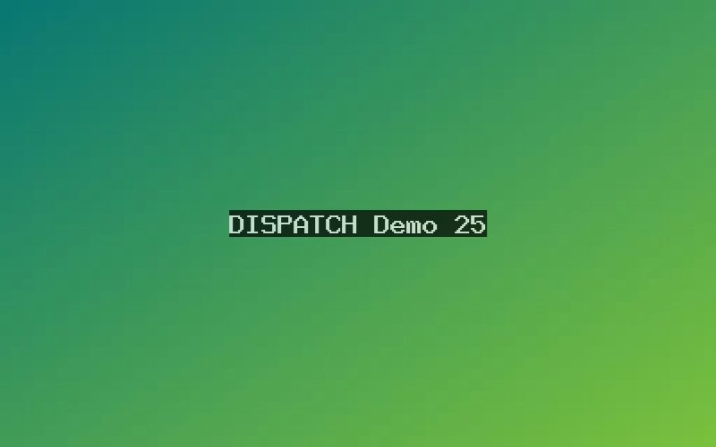
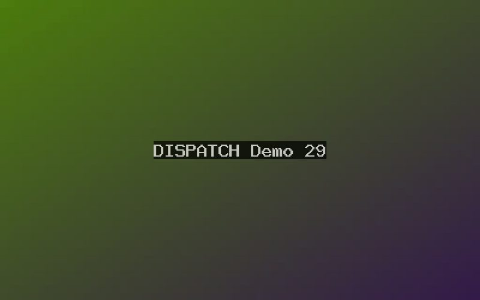
Bisherige Galerie (Standard)
<div class="gallery" data-media="m…,m…,m…"></div>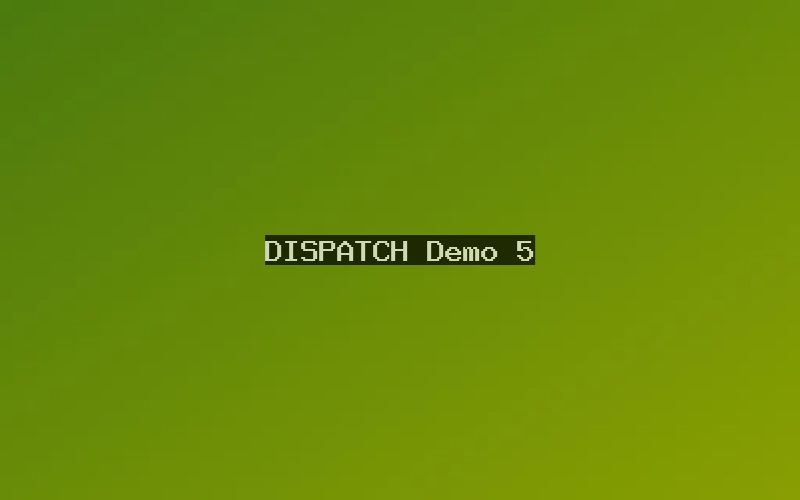
Diese Form bleibt unverändert, wenn data-variant fehlt. Die Bildansicht mit Vorschaubildern und Tastatursteuerung gilt für alle Galerien und Einzelbilder: Klick oder Enter öffnet, ←/→ blättert, Pos1/Ende springt, Esc schließt.
Vorher und nachher
Wofür: Zwei Aufnahmen derselben Stelle übereinanderlegen und mit einem Regler vergleichen – Veränderung wird sichtbar, ohne zwei Bilder im Kopf abzugleichen.
<figure class="before-after" data-media="m…ALT,m…NEU" data-labels="1985|2025">
<figcaption>Gletscherzunge 1985 und 2025</figcaption>
</figure>Ohne eigene Beschriftung stehen „Vorher“ und „Nachher“ auf den Bildern.
Chronik des Rückzugs
Wofür: Eine Abfolge von Ereignissen mit Datum erzählen – Geschichte, Projektverlauf, Tagesablauf. Wichtige Einträge lassen sich hervorheben. Funktioniert ganz ohne JavaScript; auf dem Handy steht das Datum über dem Text.
<ol class="timeline">
<li data-date="1850" data-highlight><b>Höchststand</b> Die Zunge reicht bis …</li>
<li data-date="Mai 1998"><b>Messstation Nord</b> Erste Daten …</li>
</ol>- 1850Höchststand der Kleinen Eiszeit Die Zunge reicht bis an den heutigen Parkplatz; die Moräne markiert die Grenze bis heute.
- 1921Erste Vermessung Ein Trupp der Universität setzt sechs Pegel und kartiert die Zunge.
- 1985Das Vorher-Foto Die Aufnahme aus dem Vergleich oben entsteht.
- Mai 1998Messstation Nord Seitdem Temperatur, Wind und Strahlung im Zehn-Minuten-Takt.
- Sommer 2022Rekordschmelze In einem einzigen Sommer verliert der Gletscher sechs Prozent seines Volumens.
- 2025Das Nachher-Foto Die Zunge liegt 1,4 Kilometer hinter der Moräne von 1850.
Das Datum ist freier Text bis 20 Zeichen (Jahr, Monat, Uhrzeit). Einträge erscheinen in der Reihenfolge, in der sie geschrieben sind.
Ein Bild mit Erklärpunkten
Wofür: Ein Bild an mehreren Stellen erklären, ohne den Text mit Ortsangaben („links oben…“) zu füllen. Die nummerierte Liste darunter steht immer da – sie ist zugleich die Fassung für Bildschirmleser, Druck und ohne JavaScript.
<figure class="hotspots" data-media="m…">
<ol>
<li data-x="22" data-y="35"><b>Firnlinie</b> Grenze zwischen …</li>
<li data-x="61" data-y="58"><b>Gletschertor</b> Hier tritt …</li>
</ol>
<figcaption>…</figcaption>
</figure>- Firnlinie Grenze zwischen Altschnee und blankem Eis; sie wandert jedes Jahr um einige Meter nach oben.
- Gletschertor Hier tritt das Schmelzwasser aus. Im August führt der Bach bis zu viermal so viel Wasser wie im Mai.
- Messstation Nord Misst seit 1998 Temperatur, Wind und Strahlung im Zehn-Minuten-Takt.
- Moräne von 1850 mit einem sehr langen Namen, damit man sieht, wie Text umbricht Der Wall zeigt den Höchststand der Kleinen Eiszeit.
Wertung der Messstationen
Wofür: Eine Bewertung nach mehreren Kriterien auf einen Blick vergleichbar machen. Der Gesamtwert steht oben und groß, die Einzelwerte darunter als Balken mit Zahl.
<ul class="rating" data-max="10" data-total="7.8">
<li data-score="9">Datenqualität</li>
<li data-score="6.5">Erreichbarkeit</li>
</ul>Gesamt7,8von 10
- Datenqualität
9 von 10 9 - Erreichbarkeit
6,5 von 10 6,5 - Wartungsaufwand
4 von 10 4 - Stromversorgung im Winter bei geschlossener Schneedecke
8 von 10 8 - Kosten
10 von 10 10
Ohne data-total entfällt die Gesamtzeile; data-max darf 5, 10 oder 100 sein.
Häufige Fragen
Wofür: Ergänzende Fragen und Details anbieten, ohne den Lesefluss zu unterbrechen. Es ist immer nur ein Eintrag offen; der Browser erledigt das ohne Skript.
<div class="accordion">
<details><summary>Frage</summary><p>Antwort …</p></details>
<details><summary>Frage</summary><p>Antwort …</p></details>
</div>Warum schmilzt der Gletscher von unten?
Schmelzwasser sickert durch Spalten bis zum Grund, wärmt das Eis und wirkt dort wie ein Schmierfilm.
Wie genau sind die Messungen?
Die Pegel lösen auf einen Zentimeter auf; die Volumenberechnung hat eine Unsicherheit von etwa fünf Prozent.
Kann man den Gletscher besuchen, und was sollte man beachten, wenn man über das Geröllfeld absteigt?
Ja, über den markierten Weg ab der Hütte. Das Gletschertor selbst ist wegen Steinschlag gesperrt.
Wer finanziert das Messnetz?
Zwei Universitäten und der Alpenverein teilen sich die Kosten.